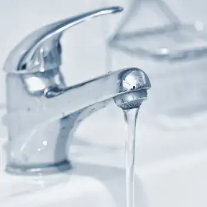

Zdravotní technika
Navrhujeme moderní vodovodní systémy zajišťující efektivní distribuci pitné vody do všech částí budovy. Klademe důraz na hygienické standardy, úsporu vody a dlouhodobou spolehlivost.

Rozsah projektování
Správně navržený vodovod zajišťuje hygienicky nezávadnou vodu a minimalizuje ztráty.
Kontaktovat nás